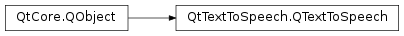

QTextToSpeech¶
Synopsis¶
Functions¶
- def
availableLocales() - def
availableVoices() - def
locale() - def
pitch() - def
rate() - def
state() - def
voice() - def
volume()
Slots¶
Signals¶
- def
localeChanged(locale) - def
pitchChanged(pitch) - def
rateChanged(rate) - def
stateChanged(state) - def
voiceChanged(voice) - def
volumeChanged(volume) - def
volumeChanged(volume)
Static functions¶
- def
availableEngines()
Detailed Description¶
The
PySide2.QtTextToSpeech.QTextToSpeechclass provides a convenient access to text-to-speech enginesUse
PySide2.QtTextToSpeech.QTextToSpeech.say()to start synthesizing text. It is possible to specify the language withPySide2.QtTextToSpeech.QTextToSpeech.setLocale(). To select between the available voices usePySide2.QtTextToSpeech.QTextToSpeech.setVoice(). The languages and voices depend on the available synthesizers on each platform. On Linux,speech-dispatcheris used by default.
-
class
PySide2.QtTextToSpeech.QTextToSpeech([parent=nullptr])¶ -
class
PySide2.QtTextToSpeech.QTextToSpeech(engine[, parent=nullptr]) Parameters: - engine – unicode
- parent –
PySide2.QtCore.QObject
Loads a text-to-speech engine from a plug-in that uses the default engine plug-in and constructs a
PySide2.QtTextToSpeech.QTextToSpeechobject as the child ofparent.The default engine may be platform-specific.
If the plugin fails to load,
QTextToSpeech.state()returnsQTextToSpeech.BackendError.Loads a text-to-speech engine from a plug-in that matches parameter
engineand constructs aPySide2.QtTextToSpeech.QTextToSpeechobject as the child ofparent.If
engineis empty, the default engine plug-in is used. The default engine may be platform-specific.If the plugin fails to load,
QTextToSpeech.state()returnsQTextToSpeech.BackendError.
-
PySide2.QtTextToSpeech.QTextToSpeech.State¶ Constant Description QTextToSpeech.Ready The synthesizer is ready to start a new text. This is also the state after a text was finished. QTextToSpeech.Speaking The current text is being spoken. QTextToSpeech.Paused The synthesis was paused and can be resumed with PySide2.QtTextToSpeech.QTextToSpeech.resume().QTextToSpeech.BackendError The backend was unable to synthesize the current string.
-
static
PySide2.QtTextToSpeech.QTextToSpeech.availableEngines()¶ Return type: list of strings Gets the list of supported text-to-speech engine plug-ins.
-
PySide2.QtTextToSpeech.QTextToSpeech.availableLocales()¶ Return type: Gets a vector of locales that are currently supported.
Note
On some platforms these can change, for example, when the backend changes synthesizers.
-
PySide2.QtTextToSpeech.QTextToSpeech.availableVoices()¶ Return type: Gets a vector of voices available for the current locale.
Note
if no locale has been set, the system locale is used.
-
PySide2.QtTextToSpeech.QTextToSpeech.locale()¶ Return type: PySide2.QtCore.QLocale
-
PySide2.QtTextToSpeech.QTextToSpeech.localeChanged(locale)¶ Parameters: locale – PySide2.QtCore.QLocale
-
PySide2.QtTextToSpeech.QTextToSpeech.pause()¶ Pauses the current speech.
Note:
- This function depends on the platform and the backend. It may not work at all, it may take several seconds before it takes effect, or it may pause instantly. Some synthesizers will look for a break that they can later resume from, such as a sentence end.
- Due to Android platform limitations, stops what is presently being said, while
PySide2.QtTextToSpeech.QTextToSpeech.resume()starts the previously queued sentence from the beginning.
-
PySide2.QtTextToSpeech.QTextToSpeech.pitch()¶ Return type: PySide2.QtCore.double
-
PySide2.QtTextToSpeech.QTextToSpeech.pitchChanged(pitch)¶ Parameters: pitch – PySide2.QtCore.double
-
PySide2.QtTextToSpeech.QTextToSpeech.rate()¶ Return type: PySide2.QtCore.double
-
PySide2.QtTextToSpeech.QTextToSpeech.rateChanged(rate)¶ Parameters: rate – PySide2.QtCore.double
-
PySide2.QtTextToSpeech.QTextToSpeech.resume()¶ Resume speaking after
PySide2.QtTextToSpeech.QTextToSpeech.pause()has been called.
-
PySide2.QtTextToSpeech.QTextToSpeech.say(text)¶ Parameters: text – unicode Start synthesizing the
text. This function will start the asynchronous reading of the text. The current state is available using thePySide2.QtTextToSpeech.QTextToSpeech.state()property. Once the synthesis is done, aPySide2.QtTextToSpeech.QTextToSpeech.stateChanged()signal with theReadystate is emitted.
-
PySide2.QtTextToSpeech.QTextToSpeech.setLocale(locale)¶ Parameters: locale – PySide2.QtCore.QLocaleSets the
localeto a given locale if possible. The default is the system locale.
-
PySide2.QtTextToSpeech.QTextToSpeech.setPitch(pitch)¶ Parameters: pitch – PySide2.QtCore.double
-
PySide2.QtTextToSpeech.QTextToSpeech.setRate(rate)¶ Parameters: rate – PySide2.QtCore.double
-
PySide2.QtTextToSpeech.QTextToSpeech.setVoice(voice)¶ Parameters: voice – PySide2.QtTextToSpeech.QVoiceSets the
voiceto use.Note
On some platforms, setting the voice changes other voice attributes such as locale, pitch, and so on. These changes trigger the emission of signals.
-
PySide2.QtTextToSpeech.QTextToSpeech.setVolume(volume)¶ Parameters: volume – PySide2.QtCore.double
-
PySide2.QtTextToSpeech.QTextToSpeech.state()¶ Return type: PySide2.QtTextToSpeech.QTextToSpeech.State
-
PySide2.QtTextToSpeech.QTextToSpeech.stateChanged(state)¶ Parameters: state – PySide2.QtTextToSpeech.QTextToSpeech.State
-
PySide2.QtTextToSpeech.QTextToSpeech.stop()¶ Stop the text that is being read.
-
PySide2.QtTextToSpeech.QTextToSpeech.voice()¶ Return type: PySide2.QtTextToSpeech.QVoice
-
PySide2.QtTextToSpeech.QTextToSpeech.voiceChanged(voice)¶ Parameters: voice – PySide2.QtTextToSpeech.QVoice
-
PySide2.QtTextToSpeech.QTextToSpeech.volume()¶ Return type: PySide2.QtCore.double
-
PySide2.QtTextToSpeech.QTextToSpeech.volumeChanged(volume)¶ Parameters: volume – PySide2.QtCore.double
-
PySide2.QtTextToSpeech.QTextToSpeech.volumeChanged(volume) Parameters: volume – PySide2.QtCore.int
© 2018 The Qt Company Ltd. Documentation contributions included herein are the copyrights of their respective owners. The documentation provided herein is licensed under the terms of the GNU Free Documentation License version 1.3 as published by the Free Software Foundation. Qt and respective logos are trademarks of The Qt Company Ltd. in Finland and/or other countries worldwide. All other trademarks are property of their respective owners.